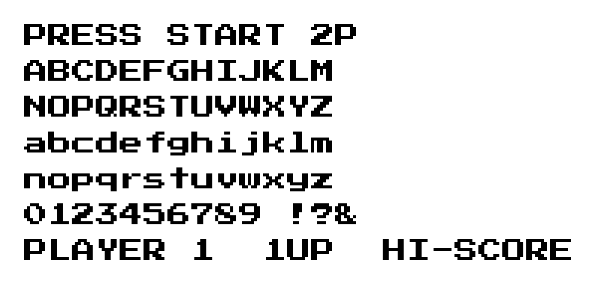

References / Typeface / 527
Press Start 2P typeface
CodeMan38’s open bitmap font revives the 8 × 8 character set of 1980s Namco arcade games, with heavy two-pixel strokes and a full lowercase.
- Source
- Font Stuff from codeman38: Press Start
- Creator
- CodeMan38
- Made
- First version about 2001; revised as Press Start 2P in June 2011; on Google Fonts from April 2012
- Style
- Pixel Art (agent-proposed, not yet reviewed by a person)
- Moods
- Game-like, bold, nostalgic
- Evidence
- Downloaded
PressStart2P-Regular.ttffrom the Google Fonts repository, rendered a specimen at its 8 px design size without anti-aliasing, enlarged it 5× to 1000 × 500 px, and inspected it. - Reviewed
- Rights
- Open license, stored. License: OFL-1.1. Rights policy
Context
CodeMan38 writes that the font “is based on the fonts from a number of classic Namco arcade games”, specifically the character set of Return of Ishtar, one of the first Namco games with a full lowercase. The June 2011 revision added Latin Extended-A, Cyrillic, and Greek. zone38.net.
The Google Fonts metadata names the designer CodeMan38, the license OFL, the category Display, and the date added 4 April 2012. The copyright line reads “Copyright 2012 The Press Start 2P Project Authors … with Reserved Font Name ‘Press Start 2P’”. Google Fonts repository.
Observed
- Each letter fills an 8 × 8 pixel cell. Vertical strokes are two pixels wide and horizontal strokes one pixel high, so the face looks heavy and square.
- Curves of C, G, O, and S are cut by single-pixel notches at the corners.
- The lowercase has short ascenders and descenders that stay inside the cell.
- The face is monospaced: “1UP” and “HI-SCORE” line up on a fixed column grid.
- The specimen has two colors only, black on white, with no intermediate gray.
Why it belongs
The font gives web pages the arcade score-counter look with one family. It suits headings and labels; its heavy strokes and fixed width make long text slow to read.
Borrow
Set headings and counters at whole multiples of 8 px, and turn off font smoothing so the strokes stay sharp.
Use capitals for labels such as “1UP” and “HI-SCORE”, and keep body text in a more readable face.
Measured
Machine-extracted by tools/image-traits.py on . Full measurement.
- Mean chroma
- 0
- Palette
- #ffffff 80%
- #ececec 8%
- #131313 7%
- #000000 4%
- #242424 1%
- #dbdbdb 1%

